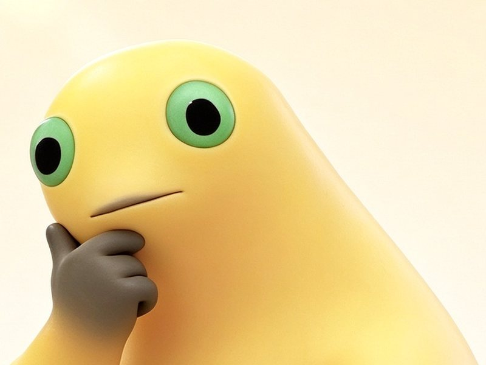
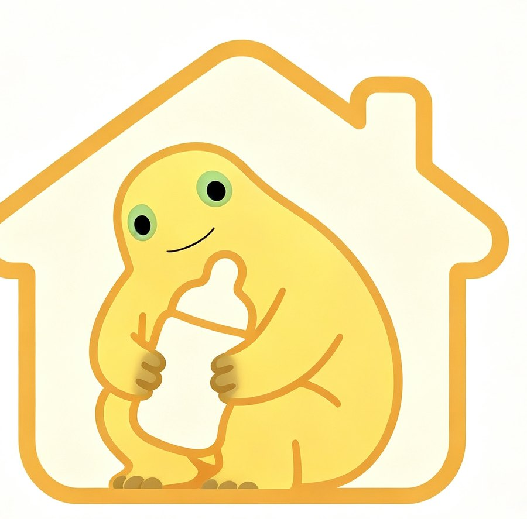

Chapter 01 · Origin
It arrived with a bottle.
Nobody launched Milk Frog. It turned up — first as an image, then as a reaction, then as a whole vocabulary. The bottle came with it.
Start with the shape. A soft yellow body, closer to a bean than a frog. Two oversized green eyes set wide apart, which is where most of the expression lives. A small, flat smile that can be read as patience, doubt, or the moment just before a sigh. And the bottle: held with both hands, close to the chest, like a phone at two in the morning.
The character belongs to the same family as the fan-made mascots that grow out of popular cartoon creatures. Someone takes a recognisable silhouette, simplifies it, gives it a prop, and lets the internet finish the sentence. Milk Frog's mutation was gentle: it kept the warmth, lost the plot, and gained a bottle.

Reading the look
Four features do almost all of the work. Remove any one of them and the character becomes a different joke.
- Colour
- Butter yellow, paler at the belly
- Eyes
- Mint green, generous pupil, no eyebrows to speak of
- Prop
- A milk bottle, always within reach
- Expression
- Neutral to the point of comment
- Posture
- One hand near the chin — thinking, or pretending to
The eyebrows are the interesting absence. Most cartoon faces signal emotion above the eyes. This one does not, which is why the same image can be captioned as confusion, patience, judgement, or nothing at all. The face is a blank document with a font already chosen.
The bottle is the argument
A frog with a bottle is a frog with a routine. It suggests someone who has decided to sit this one out, drink something warm, and think about it tomorrow. That is the joke, and also the comfort. The bottle is not a punchline; it is an alibi.
It also makes the character oddly domestic. The frog is not in a pond, a forest, or a story. It is indoors, in the soft light of a room you cannot see, holding the one object that says I live here. The internet recognised the room immediately.

A chronology without dates
Dates would be misleading. Meme time is compressed and badly documented, and this guide would rather be honest than precise. What can be said is that the character moved through four rough stages.
-
A single image
One render, passed around without much context. The expression did the work, so no one asked for a backstory.
-
A reaction
The image became a reply: the pause before answering, the polite refusal, the group-chat stare.
-
A family
Variations appeared — different poses, different props, the same doubtful face. The character became a format.
-
A field guide
Which is this site: an attempt to write the joke down before it changes again.
Sources and notes
The character's origins are scattered across short videos, reposts, and group chats. The links below are starting points, not a definitive record.
- Douyin search: Milk Frog The main place the character circulates. Search results rather than a single canonical post.
- Fan archive on GitHub A large collection of derivative images and captions, useful for seeing how the character varies.
- Original project images The renders used here come from this site's original assets, generated with an AI image tool.